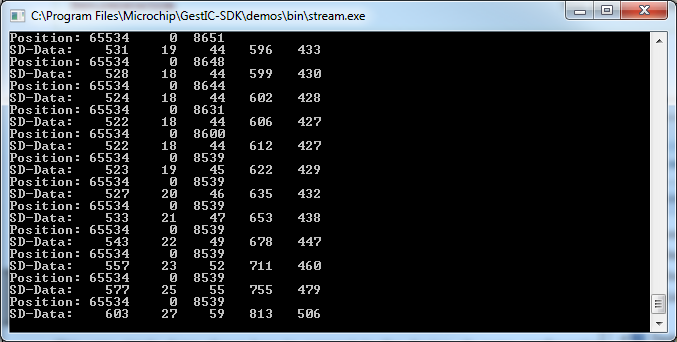

The Stream applications are minimalistic examples that demonstrate how to configure the device and receive DSP-output data.
| Stream Examples (Windows/ | The Stream applications are minimalistic examples that demonstrate how to configure the device and receive DSP-output data. |
| Usage | This very simple demo shows how to connect to the device, do some configuration, start data retrieval of position and signal deviation (SD) data and display incoming data. |
| Dynamic-API Stream Example | The dynamic stream example demonstrates how to use the Dynamic API to use the API when it is provided as an DLL. |
| Static-API Stream Example | The static stream example demonstrates how the Static API could be used if the application is built together with the API or if it is linked statically against the API. |
This very simple demo shows how to connect to the device, do some configuration, start data retrieval of position and signal deviation (SD) data and display incoming data.
Please connect a GestIC device to the machine and terminate all applications using this device before running this demo.
After starting stream.exe you should see the following console-window:
The line starting with “Position:” contains x, y and z coordinates. The line “SD-Data” shows the signal deviation for the electrodes in the order they were received from the device (which is south, west, north, east and finally center).
This demo terminates after about 10 seconds.
The dynamic stream example demonstrates how to use the Dynamic API to use the API when it is provided as an DLL.
The source code for the Windows-version is located at apps/Windows/stream-dynamic while the source code for Linux is at apps/Linux/stream-dynamic. apps/Windows/bin contains an Windows executable of the example;
This is the implementation that should normally be used on PC platforms like Windows or Linux.
The static stream example demonstrates how the Static API could be used if the application is built together with the API or if it is linked statically against the API.
The source code for the Windows-version is located at apps/Windows/stream-static while the source code for Linux is at apps/Linux/stream-static. apps/Windows/bin contains an Windows executable of the example;